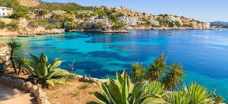

Majorka

Majorka (hiszp. i kat. Mallorca) – największa w archipelagu Balearów wyspa hiszpańska na Morzu Śródziemnym o długości około 100 km i powierzchni 3640 km². Zamieszkuje ją 859 289 mieszkańców. Głównym miastem i stolicą wyspy jest Palma de Mallorca.
Wyspa jest zbudowana głównie z wapieni mezozoicznych. Wzdłuż północno-zachodnich wybrzeży wyspy rozciąga się skrasowiałe pasmo górskie Serra de Tramuntana, z najwyższym szczytem Puig Major, wznoszącym się na wysokość 1445 m n.p.m. Drugim co do wysokości szczytem jest Puig de Massanella – 1367 m n.p.m. Południowo-wschodnią część wyspy zajmuje wyżyna z rozwiniętą rzeźbą krasową, część centralna natomiast ma charakter nizinny. Leży w strefie klimatu śródziemnomorskiego z suchym latem i opadami w zimie sięgającymi 650 mm na rok.
Oferta
Cena: ok. 77 EUR, dzieci do 12 lat: ok. 40 EUR. Majorka – objazd wyspy z północy – wycieczka rozpoczyna się od przejazdu autokarem szlakiem wzdłuż najsłynniejszych winnic, aż do miasta Inca – stolicy wyrobów skórzanych.